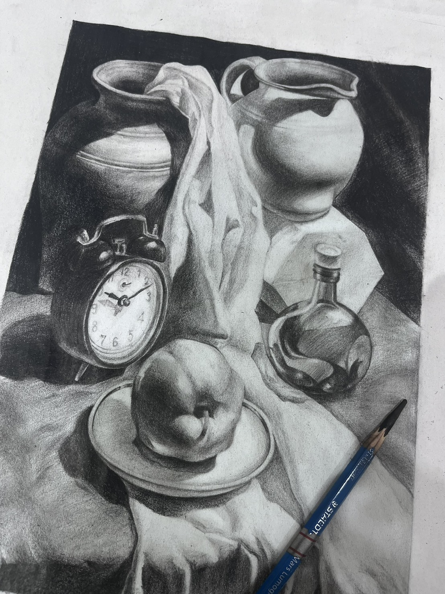
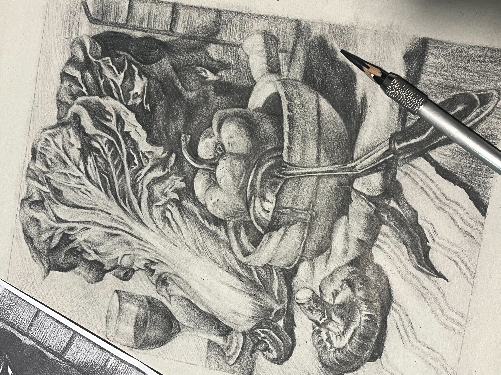
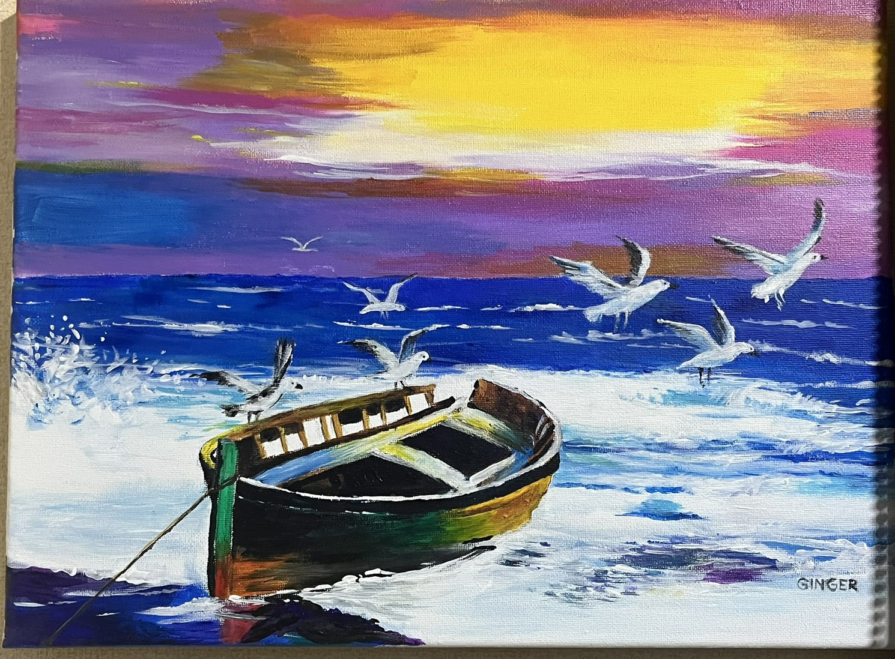
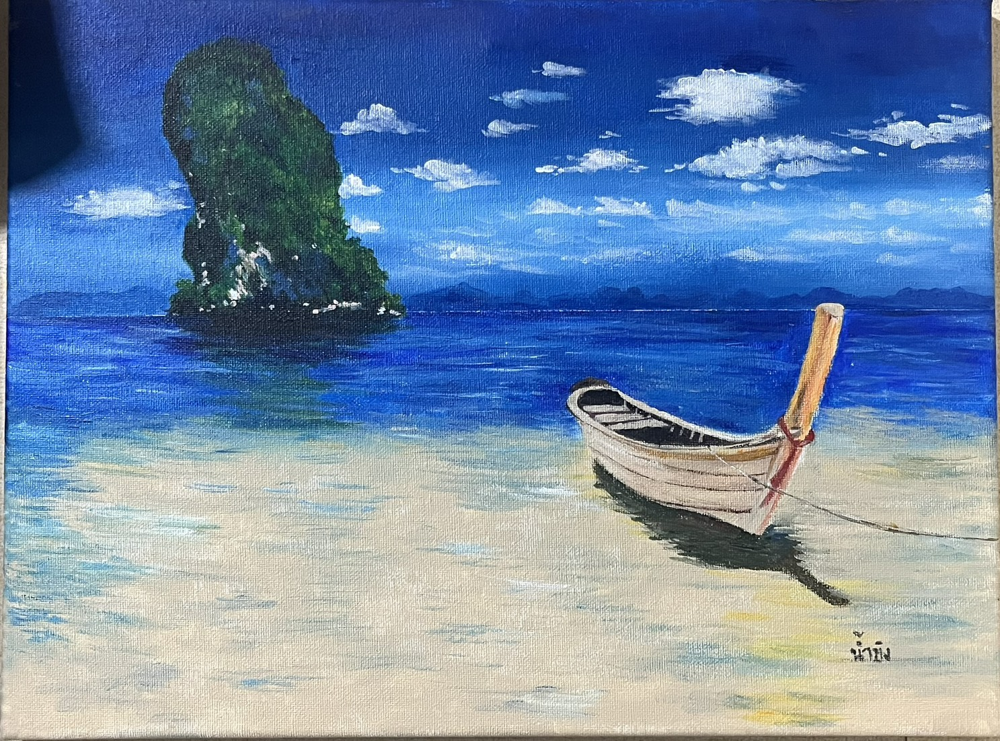

Why I Love Drawing
Drawing allows me to express my thoughts, emotions, and imagination visually. Each piece I create is a reflection of my mood, ideas, and creativity. I enjoy the process of transforming a blank canvas into something meaningful.
I started drawing as a child, initially copying cartoons and simple sketches. Over time, it became a tool for relaxation and personal growth, helping me understand my own emotions and explore new creative techniques.
How I Started Drawing
My interest in drawing began at school. I spent free time sketching in notebooks and exploring different styles. Watching online tutorials helped me learn techniques like shading, perspective, and proportion.
Motivations
- Watching speed-painting and art tutorials online
- Observing other artists’ works for inspiration
- Using drawing as a stress-relief activity
- Getting feedback from friends and family
My Favorite Drawing Techniques
Acrylic
Acrylic paints dry quickly and allow layering, which makes my work vibrant and bold. I love experimenting with textures using acrylics.
Watercolor
Watercolor is soft and fluid. I enjoy creating dreamy, delicate effects that give my artwork a magical feeling.
Shading
Shading adds depth and dimension to my drawings. Soft transitions between light and shadow bring characters and objects to life.
Artwork Gallery
Here are some of my favorite drawings that showcase my style and progress over time.




What Drawing Means to Me
Drawing is more than a hobby, it’s a form of self-expression and a tool for personal reflection. It helps me stay focused, calm, and inspired.
In the future, I hope to continue improving my skills and maybe share my artwork with others. No matter what, drawing will always be a meaningful part of my life.